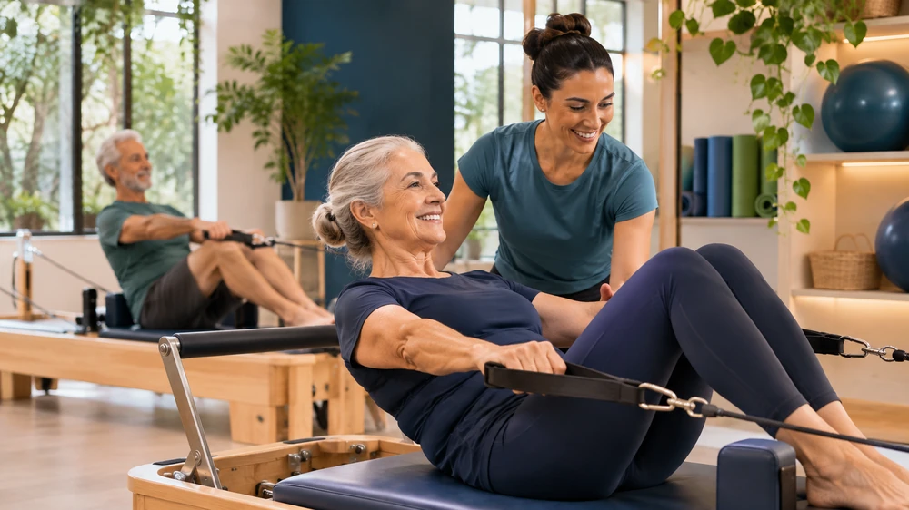
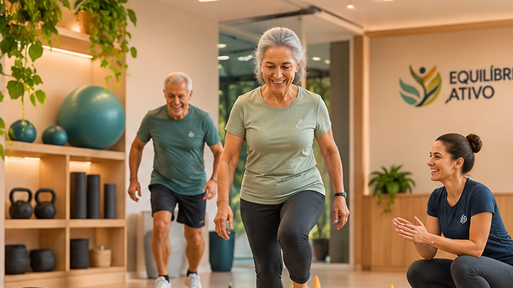

Estúdio Equilíbrio Ativo
Movimento que conversa com a sua vida.
Conheça nossas duas modalidades e como cada uma pode contribuir para o desenvolvimento de capacidades físicas úteis no dia a dia.
MOVIMENTO • CONFIANÇA • AUTONOMIA
Modalidade 01
Até 3 participantes por turmaPilates
O Pilates utiliza exercícios organizados para desenvolver controle corporal, força, mobilidade, flexibilidade e percepção do próprio movimento.
Com orientação profissional e grupos reduzidos, as atividades podem ser adaptadas à experiência e às necessidades de cada participante.
- Controle e consciência do movimento.
- Fortalecimento e mobilidade.
- Coordenação e flexibilidade.
- Orientação próxima durante a prática.
Modalidade 02
Até 4 participantes por turmaTreinamento funcional
Exercícios voltados à força, ao equilíbrio, à coordenação e à mobilidade, usando movimentos que se relacionam com situações reais da vida diária.
O planejamento respeita o ponto de partida de cada pessoa, com progressão e supervisão durante as aulas.
- Força para tarefas cotidianas.
- Equilíbrio estático e dinâmico.
- Coordenação e mobilidade.
- Progressão individualizada.

ATENDIMENTO PERSONALIZADO
O foco é a terceira idade, não uma idade obrigatória.
A participação de pessoas de outras idades também poderá ser avaliada, considerando objetivos, adequação do atendimento e vagas.
LIMITES PROFISSIONAIS
Exercício orientado não é tratamento clínico.
As aulas de Educação Física terão supervisão e progressão individual. Não substituem diagnóstico, tratamento médico ou fisioterapia quando necessários.